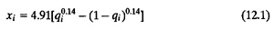
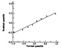
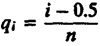

| Previous | Table of Contents | Next |
In the last two sections we discussed how a measured data set could be summarized by stating its average and variability. The next step in presenting a summary could be to state the type of distribution the data follows. For example, a statement that the number of disk I/O’s are uniformly distributed between 1 and 25 is a more meaningful summary than to specify only that the mean is 13 and the variance is 48. The distribution information is also required if the summary has to be used later in simulation or analytical modeling.
Box 12.1 Summarizing Observations
|
The simplest way to determine the distribution is to plot a histogram of the observations. This requires determining the maximum and minimum of the values observed and dividing the range into a number of subranges called cells or buckets. The count of observations that fall into each cell is determined. The counts are normalized to cell frequencies by dividing by the total number of observations. The cell frequencies are plotted as a column chart.
The key problem in plotting histograms is determining the cell size. Small cells lead to very few observations per cell and a large variation in the number of observations per cell. Large cells result in less variation but the details of the distribution are completely lost. Given a data set, it is possible to reach very different conclusions about the distribution shape depending upon the cell size used. One guideline is that if any cell has less than five observations, the cell size should be increased or a variable cell histogram should be used.
A better technique for small samples is to plot the observed quantiles versus the theoretical quantile in a quantile-quantile plot. Suppose, y(i) is the observed qith quantile. Using the theoretical distribution, the qith quantile xi is computed and a point is plotted at (xi, y(i)). If the observations do come from the given theoretical distribution, the quantile-quantile plot would be linear.
To determine the qith quantile xi, we need to invert the cumulative distribution function. For example, if F(x) is the CDF for the assumed distribution,
qi = F(xi)
or
xi = F -1(qi)
For those distributions whose CDF can be inverted, determining the x-coordinate of points on a quantile-quantile plot is straightforward. Table 28.1 lists the inverse of CDF for a number of distributions.
For other distributions one can use tables and interpolate the values if necessary. For the unit normal distribution N(0, 1), the following approximation is often used:

For N(µ, σ), the xi values computed by Equation (12.1) are scaled to µ + σxi before plotting.
One advantage of a quantile-quantile plot is that often it is sufficient to know the name of the possible distribution. The parameter values are not required. This happens if the effect of the parameters is simply to scale the quantile. For example, in a normal quantile-quantile plot, x-coordinates can be obtained using the unit normal N(0, 1) distribution. The intercept and the slope of the resulting line give the values of location and shape parameters µ and ͟.

FIGURE 12.5 Normal quantile-quantile plot for the error data.
| TABLE 12.5 Data for Normal Quantile-Quantile Plot Example | |||
|---|---|---|---|
| i |  | yi | xi |
| 1 | 0.0625 | -0.19 | -1.535 |
| 2 | 0.1875 | -0.14 | -0.885 |
| 3 | 0.3125 | -0.09 | -0.487 |
| 4 | 0.4375 | -0.04 | -0.157 |
| 5 | 0.5625 | 0.04 | 0.157 |
| 6 | 0.6875 | 0.09 | 0.487 |
| 7 | 0.8125 | 0.14 | 0.885 |
| 8 | 0.9375 | 0.19 | 1.535 |
| Previous | Table of Contents | Next |
){kind=link}
){kind=link}